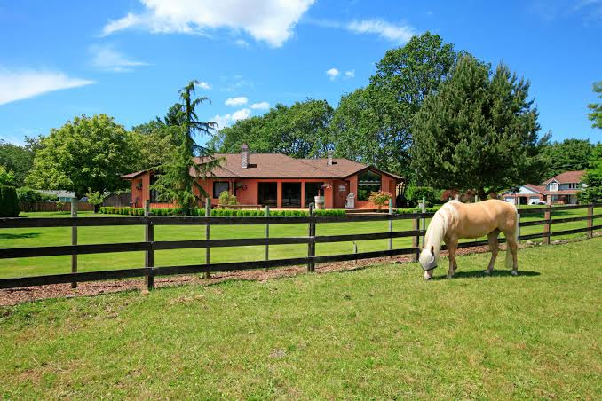

¿Quienes Somos?
Hola, me presento, mi nombre es Gonzalo Corradi, esudiante de Ingenieria en Sistemas y amante del campo y el ganado. Pero... ¿como esto responde a la pregunta? Por el momento soy la unica persona responsable y detras de la app de Rienda.
¿Como nace Rienda?
Rienda nace a partir de una pregunta frecuente que me hacia a mi mismo... Estudio Sistemas, pero me apaciona el ganado... ¿Como voy a unir los dos mundos que amo? Y despues de pensar mucho tiempo... Nace Rienda. Un software de gestion ganadera.
